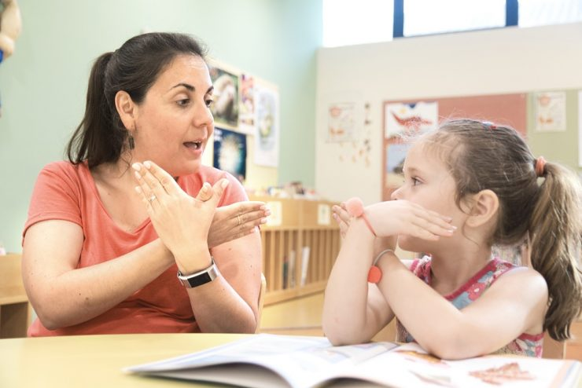

Saiba Mais
Descubra a história da Libras, curiosidades e sua importância na inclusão!

História das Libras
A Língua Brasileira de Sinais (Libras) tem suas raízes no século XIX, influenciada pela Língua de Sinais Francesa. Em 1857, o educador francês Hernest Huet fundou o Instituto Nacional de Educação de Surdos (INES) no Brasil, promovendo a difusão da Libras. Durante muito tempo, a língua de sinais foi proibida em escolas, mas, após muita luta da comunidade surda, foi finalmente reconhecida no Brasil pela Lei n° 10.436/2002, sendo um direito fundamental para a comunicação inclusiva.
Curiosidades sobre Libras
- Libras não é apenas um conjunto de gestos; ela possui gramática própria.
- Cada país tem sua própria língua de sinais, não existe uma “língua de sinais universal”.
- Expressões faciais são fundamentais para a comunicação e podem mudar o sentido de um sinal.
- Sinais específicos para nomes próprios, chamados de “sinais de nome”, são atribuídos pela comunidade surda.